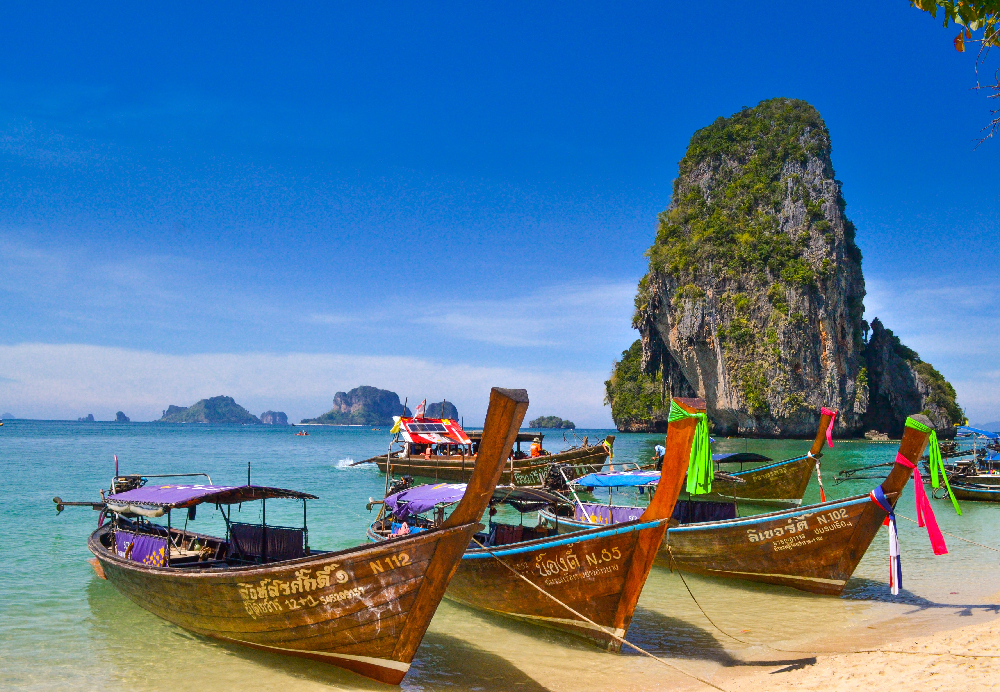
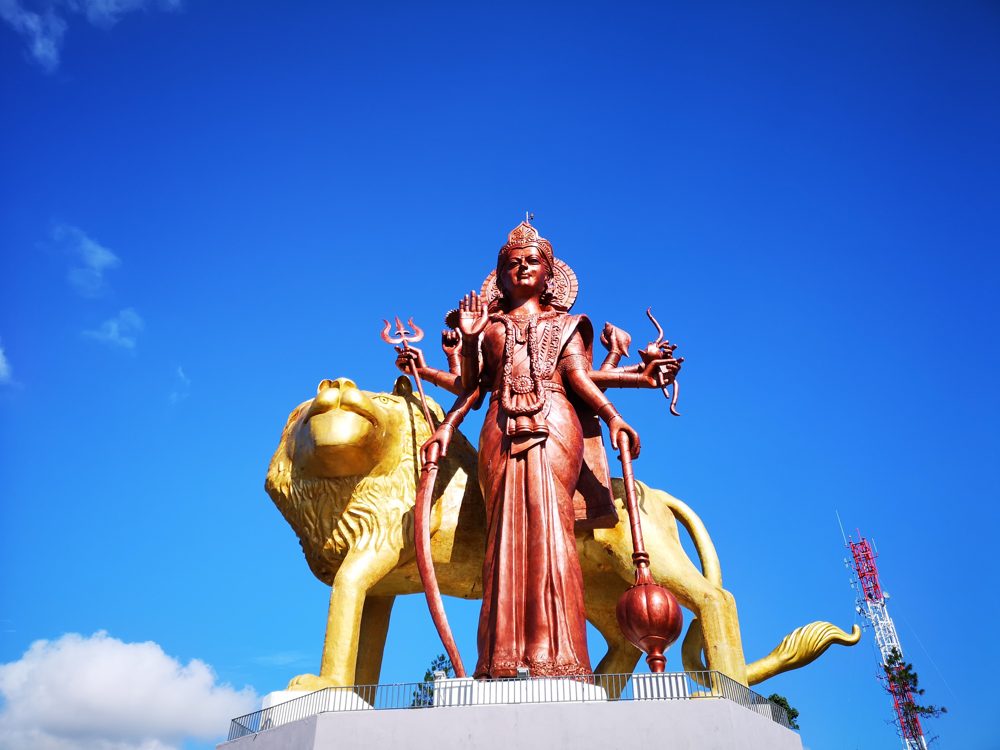
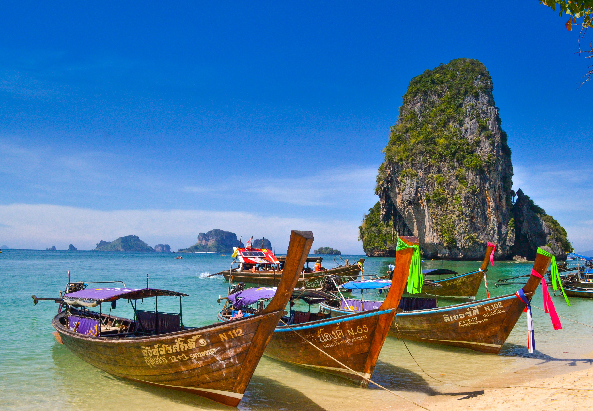
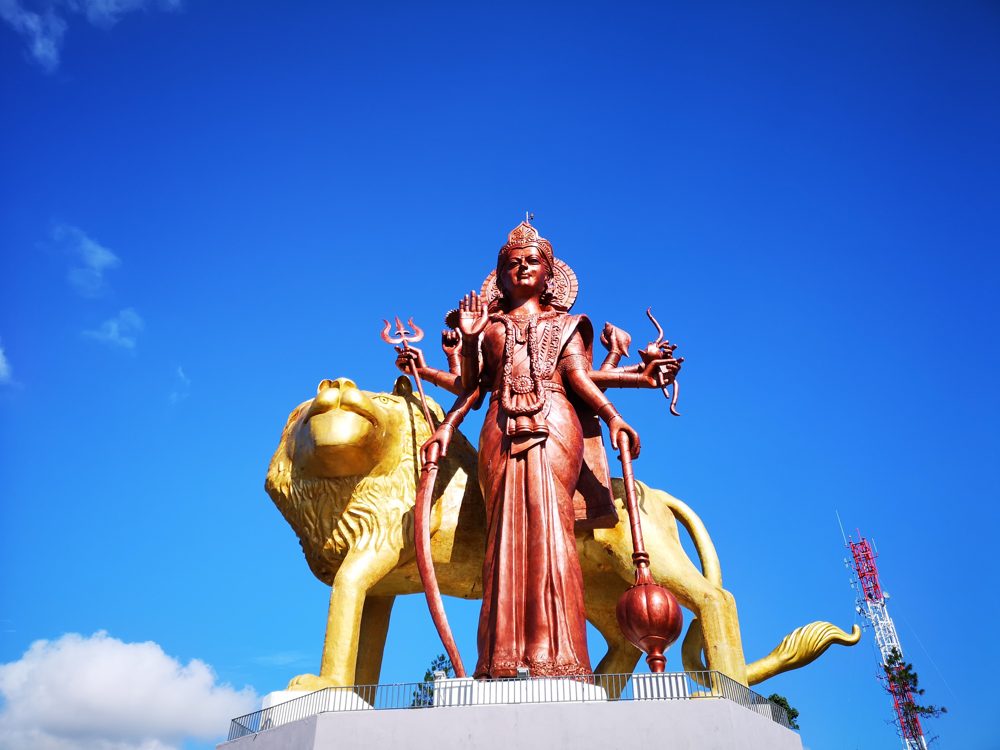

Ägypten
Ägypten (Aussprache [ɛˈɡʏptn̩] oder [ɛˈɡɪptn̩]; arabisch مصر Miṣr, offiziell Arabische Republik Ägypten) ist ein Staat im nordöstlichen Afrika mit mehr als 100 Millionen Einwohnern[7] und einer Fläche von mehr als einer Million Quadratkilometern. Die Megastadt Kairo ist ägyptische Hauptstadt und die größte Metropole Afrikas und Arabiens. Der Ballungsraum „Greater Cairo“ ist eine der bevölkerungsreichsten Stadtregionen der Erde. Weitere Millionenstädte des Landes sind Alexandria und Gizeh. Hinsichtlich der Wirtschaftsleistung beim BIP pro Kopf liegt Ägypten auf Platz 94 von 190 Ländern (2016, PPP).
Thailand
Thailand (thailändisch ประเทศไทย [pratʰêːt tʰaj]), offiziell Königreich Thailand ( ราชอาณาจักรไทย?/i [râːt͡ɕʰáʔaːnaːt͡ɕàk tʰaj], umgangssprachlich: เมืองไทย?/i [mɯːaŋ tʰaj]), ist ein Staat in Südostasien. Er grenzt an Myanmar, Laos, Kambodscha, Malaysia, das Andamanische Meer (Teil des Indischen Ozeans) und den Golf von Thailand (Teil des Pazifischen Ozeans). Die Hauptstadt Thailands und mit Abstand größte Stadt des Landes ist Bangkok. Das Land ist de jure eine konstitutionelle Monarchie. König Bhumibol Adulyadej war von 1946 bis zu seinem Tod im Jahr 2016 Staatsoberhaupt. Seit 1. Dezember 2016 ist sein Sohn Maha Vajiralongkorn thailändischer König.
Mauritius
Mauritius (deutsch [maʊ̯ˈriːtsi̯ʊs], englisch [məˈɹɪʃəs], französisch Maurice [moˈʀiːs], kreolisch Moris) ist ein Inselstaat im Südwesten des Indischen Ozeans ungefähr 870 Kilometer östlich von Madagaskar. Neben der Hauptinsel Mauritius mit der Hauptstadt Port Louis zählen Rodrigues, die Cargados-Carajos-Inseln sowie die Agalega-Inseln zum Staatsgebiet. Der Chagos-Archipel gehörte zum Staatsgebiet von Mauritius, wurde aber vom Vereinigten Königreich kurz vor der absehbaren Unabhängigkeit 1965 ausgegliedert.
Bali
Bali gilt als die westlichste der Kleinen Sundainseln, zu denen noch die Inseln von Nusa Tenggara gehören, und ist vom westlich gelegenen Java durch die 2,5 km breite Bali-Straße getrennt. Bali liegt im Indischen Ozean zwischen Java und Lombok. Die Nord-Süd-Ausdehnung beträgt 95 km, von seiner Westspitze bis zur Ostspitze sind es 145 km. Die Provinz erstreckt sich zwischen 114º25′53″ und 115º42′40″ ö. L. sowie zwischen 08º03′40″ und 08º50′48″ s. Br. Bali gilt als eine relativ junge Insel. Vom malaiischen Festland ist die Insel nur durch drei verhältnismäßig flache Meeresstraßen getrennt.